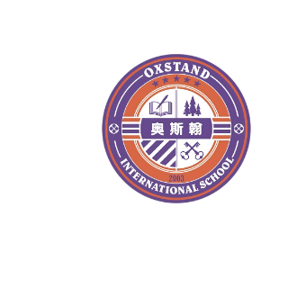

08
About oxstand
08
08
关于奥斯翰
补充完整最后一页，形成正式收口页。
深圳奥斯翰外语学校
深圳奥斯翰外语学校是深圳首家开设韩国语小语种课程的全日制高中，深耕韩国留学教育17年，是华南地区韩国升学领域的标杆学校。
学校与韩国多所顶尖大学与高中建立深度校际交流，在国内完成语言过渡与大学申请准备，真正实现高中与韩国本科的无缝衔接。

学校招生办 0755-25805707、0755-25813956
深圳市罗湖区布心路2040号
深圳市罗湖区布心路2040号

适用：招生宣传册 / 线上详情页 / 咨询顾问口径 / 家长说明会
高一开始，不急着追热点；按年级完成语言、材料、面试和院校匹配。
深圳学生的韩国大学直升方案：校内学韩语、校内备TOPIK、校内做申请。
不同项目用色区分：大学直升用金色，TOPIK体系用青绿色，艺术特色班用酒红色。
适合希望本科赴韩升学的初高中家庭
从选校、文书、学习计划、面试到网申，全流程在校内推进。
适合零基础到中高级持续提升
高一打基础，高二进中级，高三冲刺高阶与奖学金竞争力。
计划2026年秋季开设与招录
面向实用音乐、舞蹈、设计、编导等方向，学校提供专业方向和作品集要求指导。
少讲“快速过级”，多讲“三年节奏”；少讲“保录”，多讲“真实录取、真实TOPIK、真实申请流程”。
深圳家长常见选择包括韩语培训班、留学中介、外籍人员子女学校等；奥斯翰的表达重点应放在“高中阶段校内一体化升学路径”。
少讲“快速过级”，多讲“三年节奏”；少讲“保录”，多讲“真实录取、真实TOPIK、真实申请流程”。
面向深圳家庭的关键利益点：时间省、路径清、风险低、预算可控，一年约15-20万留学成本预期更容易进入家庭决策。
真正要提前准备的，不只是韩语。
如果孩子想去韩国读大学，真正要提前准备的，不只是韩语。
韩国本科申请看语言能力，也看高中阶段成绩、材料表达、专业匹配、面试状态与申请节奏。奥斯翰韩国大学直升课程，把这些分散在外部机构里的环节，放回高中三年进行规划：在学校学韩语，在学校备TOPIK，在学校做升学材料，在老师跟进下完成大学申请。
对深圳家庭来说，这意味着孩子不用等到高三才匆忙找中介，也不用把时间切碎在不同培训班之间。高一开始建立语言基础，高二进入中高级能力，高三冲刺高阶TOPIK与名校申请，三年每一步都对应清晰目标。
我们不把韩国升学包装成“轻松保录”。顶尖院校仍然需要优秀的TOPIK成绩、稳定的校内成绩、清楚的文书表达和成熟的面试表现。真正可靠的升学，是把每一项能力提前准备好。
用数据、师资和高校交流说明“为什么可信”。
把家长常见顾虑变成清晰、稳定的咨询口径。
补充完整最后一页，形成正式收口页。
深圳奥斯翰外语学校是深圳首家开设韩国语小语种课程的全日制高中，深耕韩国留学教育17年，是华南地区韩国升学领域的标杆学校。
学校与韩国多所顶尖大学与高中建立深度校际交流，在国内完成语言过渡与大学申请准备，真正实现高中与韩国本科的无缝衔接。